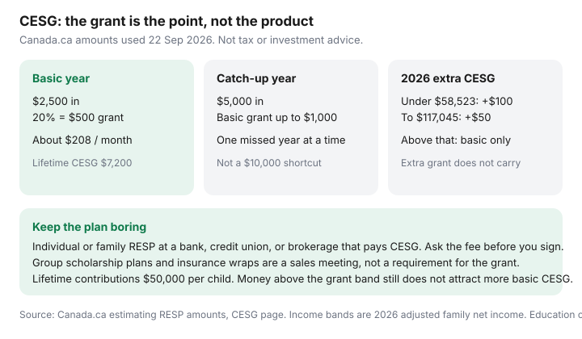

Personal Finance · Canada
How to Capture the CESG Without Overcomplicating an RESP in Canada
The Canada Education Savings Grant is a match, not a personality test. Employment and Social Development Canada pays basic CESG of 20% on the first $2,500 contributed in a year for a beneficiary, which is $500. The lifetime ceiling is $7,200 per child. Families who can contribute more than that in a catch-up year can receive up to $1,000 of basic grant, not an unlimited match. Parents miss the $500 because a salesperson made the RESP feel like a contract, or because they waited for a year when $2,500 did not hurt. A boring monthly amount catches the grant. Date-stamped 22 Sep 2026.
This page is that boring plan. Opening an RESP so a low-income family can receive the Canada Learning Bond, with no contribution required, is the CLB checklist. If you can contribute, start here. If you are only opening so the bond can land, open there first and come back when a contribution is real.
Disclosure: Brokerage RESP accounts are an offer type. Saving Optimizer may later add partner links. We do not currently claim provider partnerships, and this page does not rank banks, scholarship plans, or funds. Education only — not tax, legal, or investment advice. Confirm grant rules on Canada.ca before you rely on a sales illustration.
Key takeaways
- Basic CESG: 20% of the first $2,500 per beneficiary per year = $500. Lifetime basic plus additional CESG: $7,200.
- Unused basic grant room can be caught up, generally one extra year at a time: up to $1,000 of basic CESG on $5,000 of contributions. Additional CESG does not carry forward the same way.
- 2026 additional CESG on the first $500, from Canada.ca: 20% ($100) if adjusted family net income is under $58,523; 10% ($50) between $58,523 and $117,045; none above that.
- About $208 a month lands on $2,500. You do not need a lump sum in December, and you do not need a group scholarship plan to receive the grant.
- RESP lifetime contributions are $50,000 per beneficiary. Dollars above the CESG band grow inside the plan but do not attract more basic grant. Contributions are not deductible.
CESG basics: annual and lifetime limits
Canada.ca’s estimating-amounts page, used 22 Sep 2026, is the table to trust over a brochure. Every eligible beneficiary can receive basic CESG of 20% on the first $2,500 of annual contributions, regardless of income. The grant is paid into the RESP. It is not a cheque to the parent. Contributions themselves are not tax-deductible. Growth is tax-deferred. When the student later receives an Educational Assistance Payment, the grant and the earnings are taxed in the student’s hands. The original contributions can come back to the subscriber tax-free. That split is why “it’s all tax-free” is the wrong sentence.
| Adjusted family net income | Additional CESG on the first $500 | Basic CESG on the first $2,500 | Maximum yearly CESG |
|---|---|---|---|
| Under $58,523 | 20% = $100 | 20% = $500 | $600 |
| $58,523 to $117,045 | 10% = $50 | 20% = $500 | $550 |
| More than $117,045 | Not eligible | 20% = $500 | $500 |
The lifetime maximum is $7,200 for each beneficiary, across every RESP in that child’s name. Once the lifetime grant is paid, more contributions do not produce more CESG. Additional CESG is income-tested on the primary caregiver’s adjusted family net income and can change as income changes. It applies to the first $500 contributed, not to the whole $2,500. In a catch-up year the basic grant can rise; the additional slice does not stack into a second year’s extra. File the caregiver’s return. A missing return is how the income test fails.
The grant is available until the end of the calendar year the beneficiary turns 17. For ages 16 and 17, Canada.ca adds a contribution history test: at least $2,000 contributed (and not withdrawn) before the end of the year the child turns 15, or at least $100 a year in any four of those earlier years (and not withdrawn). A plan that was empty until grade 11 often cannot catch the last two years. That is the cost of waiting for a perfect lump sum.
Contribution timing that catches the grant without lump-sum stress
$2,500 ÷ 12 is about $208 a month. Bi-weekly, $2,500 ÷ 26 is about $96. Start the transfer the business day after payday, the same habit as pay yourself first, into the RESP rather than into a chequing “education jar” that December will spend. If you start in July, divide $2,500 by the pays you have left. A December top-up is allowed. A December panic is optional.
Catch-up is real and limited. If the beneficiary has unused basic CESG room from earlier years, you can contribute $5,000 in a later year and receive up to $1,000 of basic grant — this year plus one missed year — not three missed years at once. Households that skipped ages 2 through 8 do not fix it with a single $20,000 cheque. They fix one missed year per contribution year, and they stop when the lifetime $7,200 is reached. Money you contribute above the amount that attracts a grant still counts toward the $50,000 lifetime contribution limit for that beneficiary. There is no annual contribution cap, which is how families accidentally hit $50,000 before the grants are finished.
If several relatives want to help, they should not each open a secret RESP. Grants and the $50,000 limit are per beneficiary, across all plans. One subscriber, one plan, a note in the family chat for birthday money is enough. Extra cash from a grandparent can fund the $208; it does not need its own contract.

Family versus individual plans for multiple children
An individual RESP names one beneficiary. A family RESP names more than one, and those beneficiaries generally have to be related to the subscriber by blood or adoption — siblings, not the neighbour’s child. Investment earnings inside a family plan can be shared among the named siblings. CESG is less generous about sharing. Each child still has a personal lifetime CESG limit of $7,200. Additional CESG and the Canada Learning Bond are tied to the child who qualified; they are not a pool you can reassign because one sibling skipped college. If a child does not attend, unused grant for that child goes back to the government. It does not become the other child’s extra lifetime limit.
For two children close in age, a family plan keeps one login and one transfer. For a child who might be the only beneficiary, or when a relative who is not a parent wants to subscribe, an individual plan is the usual fit. The grant rules do not improve because the brochure says “family.” Ask the provider, in writing, whether the plan can receive basic CESG, additional CESG, and the Canada Learning Bond. Some accounts cannot.
Avoiding salesperson RESP products with high fees
The grant arrives in a group scholarship plan, an insurance-wrapped RESP, or a bank or brokerage RESP. The product is not the grant. Group plans and scholarship trusts are the contracts that show up at kitchen tables: an enrolment fee taken from early contributions, a schedule you must keep, restrictions on which schools or programs count, and earnings that may be shared with other members of the “group” rather than staying with your child. If the child does not enrol in a qualifying program, the sales illustration and the contract can diverge. Read the fee schedule before the first $208 leaves your account. If the enrolment fee is large relative to the first year’s $500 grant, you are paying for distribution, not for Ottawa.
Insurance-wrapped plans add an insurance cost and often a higher ongoing fee. That can be a deliberate choice if you have compared the cost to term insurance you already understand. It is a poor default because a branch appointment framed it as “what parents do.” A self-directed or savings RESP at a bank, credit union, or brokerage that administers the CESG is enough to capture the match. This page will not name a fund. High fees compound against a 20% grant; they do not compound with it.
Questions that end a pressured meeting: What is the enrolment fee in dollars? What is the ongoing fee? Can I stop contributions without forfeiting earnings? Which post-secondary programs count? Do you administer CESG and the Canada Learning Bond? Can I transfer to another promoter later, and what is withheld? If the answers are “it’s in the booklet” and the booklet is not in your hands, do not sign.
Track grants and contributions in a simple spreadsheet
Promoters report contributions and grants, and statements lag. A household spreadsheet prevents the $50,000 surprise and the missed catch-up. One row per child, one line per year:
- Contributions this year, and lifetime contributions.
- Basic CESG received this year, and lifetime CESG (target ceiling $7,200).
- Additional CESG, if the income test applied. Do not assume it repeats next year.
- Canada Learning Bond, if any, so you do not confuse bond deposits with grant deposits.
- The child’s birth year, the year they turn 15 (history test), and the year they turn 17 (last grant year).
When the statement arrives, match the grant to the contribution. A $2,500 contribution should show $500 of basic CESG within the promoter’s usual processing time, plus $50 or $100 of additional grant if you qualified. If it does not, ask the promoter before you contribute another lump “to fix it.” An over-contribution above $50,000 lifetime is a tax problem. A missing grant is a paperwork problem. They are not solved the same way.
What happens if education plans change
Children change their minds. The plan should survive that. If the beneficiary enrols in a qualifying post-secondary program, the subscriber can request an Educational Assistance Payment. The student reports the taxable portion. Keep the proof of enrolment the promoter asks for; a verbal “they started college” does not release the grant.
If the child does not enrol, you have choices a contract may narrow. Contributions can generally be withdrawn by the subscriber without tax, because they were never deducted. CESG and other grants that cannot be used are returned to the government. Earnings left behind may be paid as an Accumulated Income Payment to the subscriber, which is taxable and can attract an extra 20% tax, with some relief if the amount is transferred to the subscriber’s RRSP within the rules and if RRSP room exists. A family plan may let a sibling use shared earnings, still subject to that sibling’s own $7,200 CESG lifetime limit. Transferring a plan to another promoter is possible when both institutions cooperate; group-plan contracts are where transfers get expensive. Read the exit chapter before you need it.
None of this is a reason to skip the $500. It is a reason to keep the contract short, the fee visible, and the spreadsheet current. The CLB page covers families who should open even when $208 a month is not available yet.
Sources & date stamps
- Canada.ca, How much money can be added to an RESP — 2026 additional CESG income bands, $500 / $7,200 basic structure, ages 16–17 history test, CLB cross-reference (used 22 Sep 2026).
- CRA, Canada Education Savings Grant — 20% basic CESG, $500 a year, $1,000 if unused room, lifetime $7,200.
- RESP lifetime contribution limit $50,000 per beneficiary; contributions are not deductible. Educational assistance payments are taxed to the student.
- Saving Optimizer — Canada Learning Bond opening checklist for families who cannot contribute yet.
Frequently asked questions
How much do I need to contribute to get the basic CESG?
Canada.ca pays basic CESG of 20% on the first $2,500 contributed in a year for a beneficiary, which is $500. About $208 a month reaches that band. Contributions above the band do not attract more basic grant.
Can I catch up missed grant years all at once?
No. Unused basic CESG can generally be caught up one year at a time: up to $1,000 of basic grant on $5,000 of contributions in a later year. The lifetime ceiling is $7,200. Additional CESG does not carry forward the same way.
What are the 2026 additional CESG income bands?
On Canada.ca’s estimating-amounts page, used 22 Sep 2026: under $58,523 of adjusted family net income, an extra 20% ($100) on the first $500; from $58,523 to $117,045, an extra 10% ($50); above $117,045, basic CESG only. File the primary caregiver’s return so the test can run.
Do I need a group scholarship plan to receive the grant?
No. The grant is paid into an RESP that administers the CESG. A bank, credit union, or brokerage plan can do that. Group plans and insurance wraps add fees and contract limits that are not a condition of the grant.
What if my child does not go to school?
Contributions can generally come back to the subscriber without tax, because they were not deducted. Unused grants go back to the government. Earnings may be taxable to the subscriber, including an extra tax unless a permitted RRSP transfer applies. A family plan may share earnings with a sibling, still subject to that sibling’s own $7,200 CESG limit.